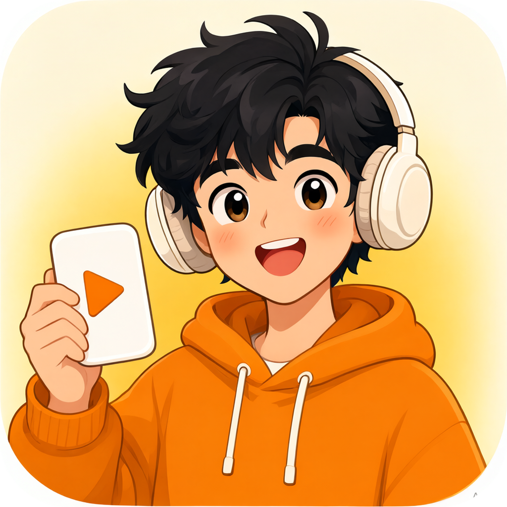

粘贴链接
从 App 里复制整段分享文案，直接粘进来。B站、YouTube、小红书、抖音都可以。

kedao 开始提取在线视频提取 · 手机也能用
粘贴 B站、YouTube、小红书、抖音的链接，kedao 解析出画面与声音，选好清晰度，直接保存到你的设备。
01 / 在线提取
整段分享文案也可以，kedao 会自动找出里面的链接。
02 / 怎么用
从 App 里复制整段分享文案，直接粘进来。B站、YouTube、小红书、抖音都可以。
1080P、720P、480P，或者只要声音。解析后先看封面和标题，再决定。
手机浏览器会直接下载到“文件”；电脑会进入下载文件夹。大文件建议连 Wi-Fi。
03 / 支持平台
基于 yt-dlp，支持 1000+ 个视频站点；下面是常用的几个。
04 / 桌面版
Windows 桌面版继续使用本机浏览器 Cookie，支持批量链接、4K 与 MP3，绿色单文件，不用安装。
05 / 说明
云端服务器的 IP 容易被 YouTube 要求人机验证，而网页无法读取你电脑上的 Cookie。遇到这种情况，请用 Windows 桌面版提取。
在线版默认最高 1080P，并限制单文件 300MB、时长 90 分钟，避免免费服务器被大文件拖垮。4K 请用桌面版。
不会。任务完成 60 分钟后，服务器会自动删除文件。请下载完成后立刻保存到本地。
Android 一般在“文件/Downloads”，iPhone 在“文件”App 的“下载”里。若浏览器只预览不下载，长按视频选择“存储到文件”。
kedao 只提供工具。请只下载你有权保存的内容，遵守各平台条款与版权规定；不要用于搬运、售卖或侵犯他人权利。
免费后端会休眠，第一次请求需要叫醒，通常等 30–60 秒。之后再解析就快了。